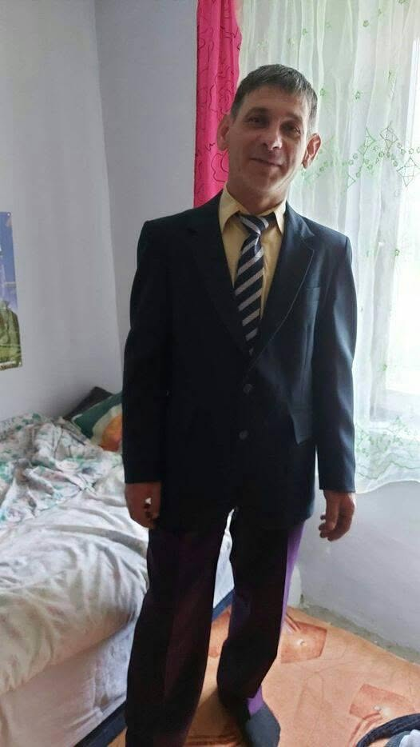

Ez az oldal kizárólag azért jött létre, hogy megörökítse Feri elképesztő mindennapjait, amíg teljesen el nem felejtjük.

Hogyan kezdődött? Amikor Feri belépett a bűvös negyvenes klubba, a fizika törvényei azonnal megváltoztak körülötte. Azóta nincs olyan kávé, amit ne hűtene vissza háromszor, mert elkalandozott a telefonján, és nincs olyan szerszám, amit ne kellene kétszer keresni.
A legenda: A környéken csak úgy emlegetik, mint a "40-es évek bűvészét", aki képes bármilyen egyszerű feladatot három órás szakértői tanácskozássá alakítani, miközben a kávéja mindig kihűl.
Feri, ha olvasod ezt: örülünk, hogy bírod a gevicset, most már küldheted a sört! 🍻